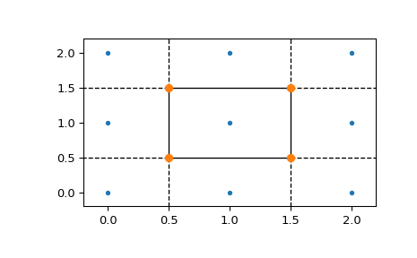

scipy.spatial.Voronoi¶
-
class
scipy.spatial.Voronoi(points, furthest_site=False, incremental=False, qhull_options=None)¶ Voronoi diagrams in N dimensions.
New in version 0.12.0.
- Parameters
- pointsndarray of floats, shape (npoints, ndim)
Coordinates of points to construct a convex hull from
- furthest_sitebool, optional
Whether to compute a furthest-site Voronoi diagram. Default: False
- incrementalbool, optional
Allow adding new points incrementally. This takes up some additional resources.
- qhull_optionsstr, optional
Additional options to pass to Qhull. See Qhull manual for details. (Default: “Qbb Qc Qz Qx” for ndim > 4 and “Qbb Qc Qz” otherwise. Incremental mode omits “Qz”.)
- Raises
- QhullError
Raised when Qhull encounters an error condition, such as geometrical degeneracy when options to resolve are not enabled.
- ValueError
Raised if an incompatible array is given as input.
Notes
The Voronoi diagram is computed using the Qhull library.
Examples
Voronoi diagram for a set of point:
>>> points = np.array([[0, 0], [0, 1], [0, 2], [1, 0], [1, 1], [1, 2], ... [2, 0], [2, 1], [2, 2]]) >>> from scipy.spatial import Voronoi, voronoi_plot_2d >>> vor = Voronoi(points)
Plot it:
>>> import matplotlib.pyplot as plt >>> fig = voronoi_plot_2d(vor) >>> plt.show()
The Voronoi vertices:
>>> vor.vertices array([[0.5, 0.5], [0.5, 1.5], [1.5, 0.5], [1.5, 1.5]])
There is a single finite Voronoi region, and four finite Voronoi ridges:
>>> vor.regions [[], [-1, 0], [-1, 1], [1, -1, 0], [3, -1, 2], [-1, 3], [-1, 2], [0, 1, 3, 2], [2, -1, 0], [3, -1, 1]] >>> vor.ridge_vertices [[-1, 0], [-1, 0], [-1, 1], [-1, 1], [0, 1], [-1, 3], [-1, 2], [2, 3], [-1, 3], [-1, 2], [1, 3], [0, 2]]
The ridges are perpendicular between lines drawn between the following input points:
>>> vor.ridge_points array([[0, 3], [0, 1], [2, 5], [2, 1], [1, 4], [7, 8], [7, 6], [7, 4], [8, 5], [6, 3], [4, 5], [4, 3]], dtype=int32)
- Attributes
- pointsndarray of double, shape (npoints, ndim)
Coordinates of input points.
- verticesndarray of double, shape (nvertices, ndim)
Coordinates of the Voronoi vertices.
- ridge_pointsndarray of ints, shape
(nridges, 2) Indices of the points between which each Voronoi ridge lies.
- ridge_verticeslist of list of ints, shape
(nridges, *) Indices of the Voronoi vertices forming each Voronoi ridge.
- regionslist of list of ints, shape
(nregions, *) Indices of the Voronoi vertices forming each Voronoi region. -1 indicates vertex outside the Voronoi diagram.
- point_regionlist of ints, shape (npoints)
Index of the Voronoi region for each input point. If qhull option “Qc” was not specified, the list will contain -1 for points that are not associated with a Voronoi region.
- furthest_site
True if this was a furthest site triangulation and False if not.
New in version 1.4.0.
Methods
add_points(points[, restart])Process a set of additional new points.
close()Finish incremental processing.